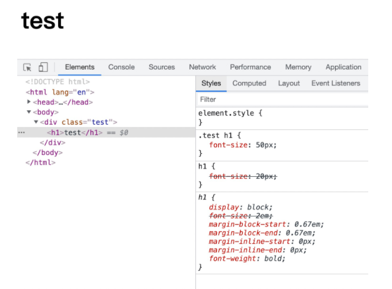
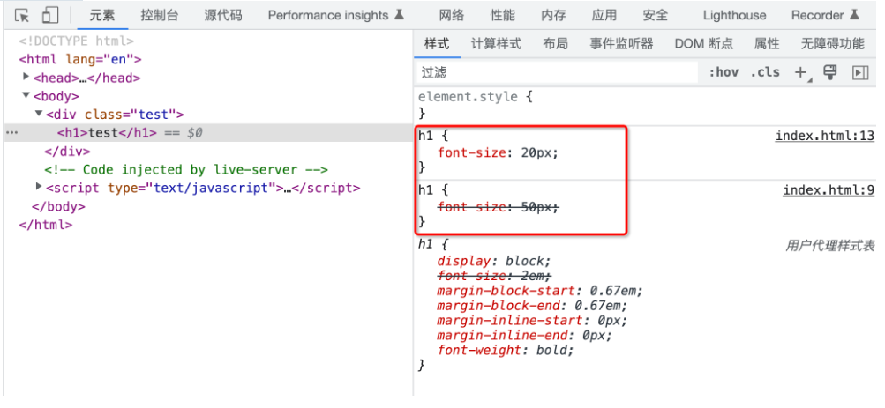
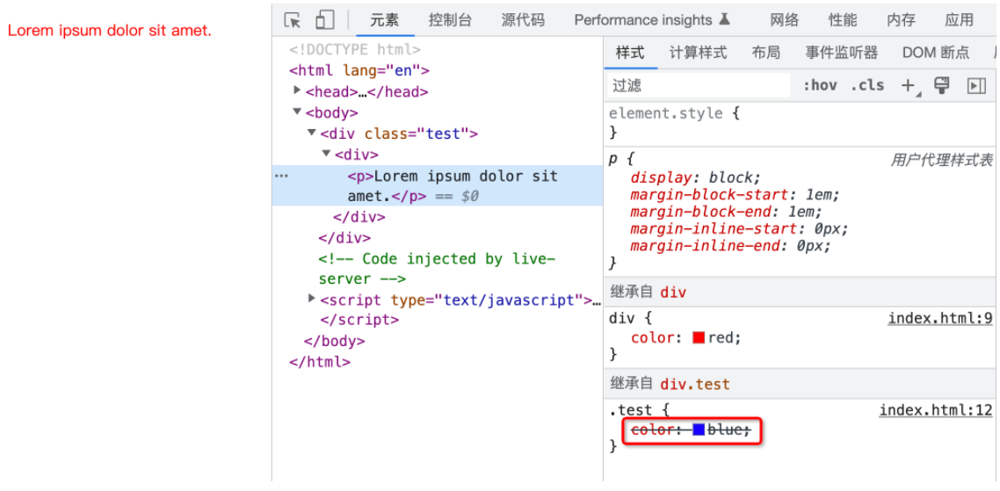
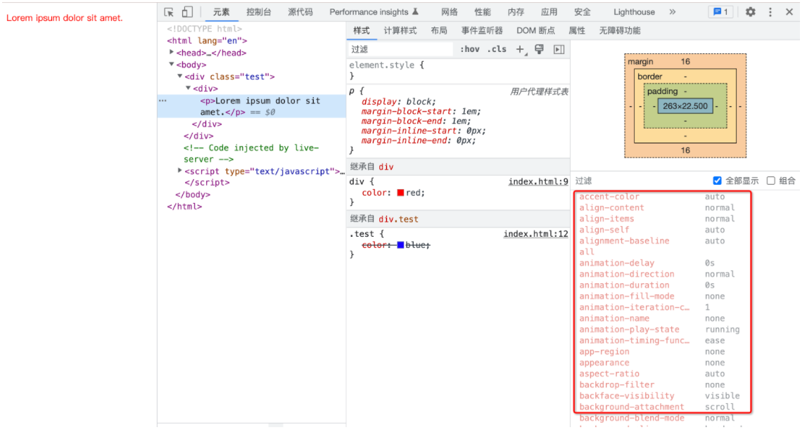
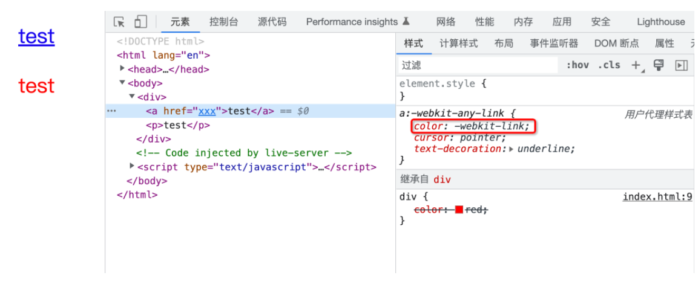
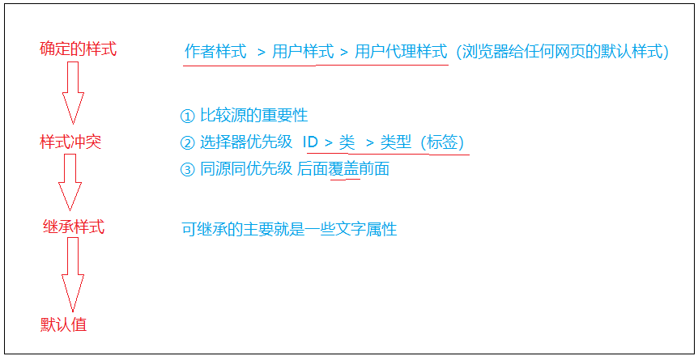

css属性及样式优先级
Q1：一个元素的属性值是只有我们在css文件中写的那些属性吗？
answer：不是，答案是该元素上面会有 CSS 所有的属性。打开浏览器的开发者面板，选择【元素】，切换到【计算样式】，之后勾选【全部显示】，此时你就能看到在此 h1 上面所有 CSS 属性对应的值。换句话说，我们所书写的任何一个 HTML 元素，实际上都有完整的一整套 CSS 样式。只不过你没有书写的样式，大概率可能会使用其默认值。
Q2:为什么有的元素没有编写样式，但是也不使用默认值？
answer：详情见下面css属性值的计算过程。
css属性值的计算过程
依次包含以下四个步骤：
1.确定的声明值（页面作者样式 > 用户样式 > 用户代理样式）
2.层叠冲突
3.使用继承
4.使用默认值
1.确定的声明值
作者样式表，用户代理样式表 都属于确定的声明值
2.层叠冲突
在确定声明值时，可能出现一种情况，那就是声明的样式规则发生了冲突。
此时会进入解决层叠冲突的流程。而这一步又可以细分为下面这三个步骤：
- 比较源的重要性
- 比较优先级
- 比较次序
比较源的重要性
整体来讲有三种来源：
- 网页的作者可以定义文档的样式，这是最常见的样式表，称之为页面作者样式。
- 浏览器的用户，可以使用自定义样式表定制使用体验，称之为用户样式。
- 浏览器会有一个基本的样式表来给任何网页设置默认样式。这些样式统称用户代理样式。
来源优先级： 页面作者样式 > 用户样式 > 用户代理样式
案例：
例如现在有页面作者样式表和用户代理样式表中存在属性的冲突，那么会以作者样式表优先。
1 | |

可以明显的看到，作者样式表和用户代理样式表中同时存在的 display 属性的设置，最终作者样式表干掉了用户代理样式表中冲突的属性。这就是第一步，根据不同源的重要性来决定应用哪一个源的样式。
比较优先级
案例：
1 | |
1 | |
结果：
我们可以看到应用的是font-size：50px，因为上面的选择器的权重要大于下面的选择器，因此最终标题呈现为 50px
选择器优先级：id 选择器 > 类选择器 > 类型选择器
比较次序
经过前两个比较步骤，剩下的那就是样式声明既是同源，权重也相同。
此时就会进入第三个步骤，比较样式声明的次序。
例子：
1 | |

同源同优先级样式：后面的样式覆盖前面的样式
3.使用继承
案例：
1 | |
1 | |

继承的样式采取 “就近原则”
(1)可继承样式：（一般关于文字的可继承）可在MDN查询属性是否可继承https://developer.mozilla.org/zh-CN/docs/Web/CSS/
所有元素可继承：visibility和cursor
内联元素可继承：letter-spacing、word-spacing、white-space、line-height、color、font、 font-family、font-size、font-style、font-variant、font-weight、text- decoration、text-transform、direction
块状元素可继承：text-indent和text-align
列表元素可继承：list-style、list-style-type、list-style-position、list-style-image
表格元素可继承：border-collapse
（2）不可继承的：display、margin、border、padding、background、height、min-height、max- height、width、min-width、max-width、overflow、position、left、right、top、 bottom、z-index、float、clear、table-layout、vertical-align、page-break-after、 page-bread-before和unicode-bidi
4.使用默认值
如果确定的声明值、继承的属性都没有，属性值还不能确定下来，那么就只能是使用默认值了。

案例：
1 | |
1 | |

结果：a标签中的test为蓝色 ，p标签中的test为红色
原因：css中只对div设置了color属性值，a标签和p标签为直接针对其设置属性值。根据属性值的计算过程【1.确定的声明值（页面作者样式 > 用户样式 > 用户代理样式）2.层叠冲突 3.使用继承 4.使用默认值】，页面作者样式和用户样式均未设置相关属性，用户代理样式中设置有a链接的color样式为蓝色，所以a链接中的test显示蓝色，而p标签在前两步均不能获取到属性值，只能在第三步继承div的color属性值red。
整体流程图
